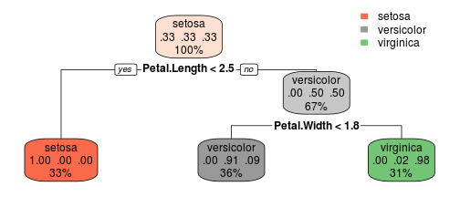

- Created app that predicts Iris species using petal length and width
- Using decision tree model to fit data
- Give most likely species and probability
Luke Chen
Model is first fitted with dataset iris
## n= 150
##
## node), split, n, loss, yval, (yprob)
## * denotes terminal node
##
## 1) root 150 100 setosa (0.33333333 0.33333333 0.33333333)
## 2) Petal.Length< 2.45 50 0 setosa (1.00000000 0.00000000 0.00000000) *
## 3) Petal.Length>=2.45 100 50 versicolor (0.00000000 0.50000000 0.50000000)
## 6) Petal.Width< 1.75 54 5 versicolor (0.00000000 0.90740741 0.09259259) *
## 7) Petal.Width>=1.75 46 1 virginica (0.00000000 0.02173913 0.97826087) *
For example, if petal length is 3 cm and petal width is 1cm, it outputs the splitting criteria and prediction

## 1
## versicolor
## Levels: setosa versicolor virginica
## setosa versicolor virginica
## 1 0 0.9074074 0.09259259
Thanks for your time. Shiny code can be found in